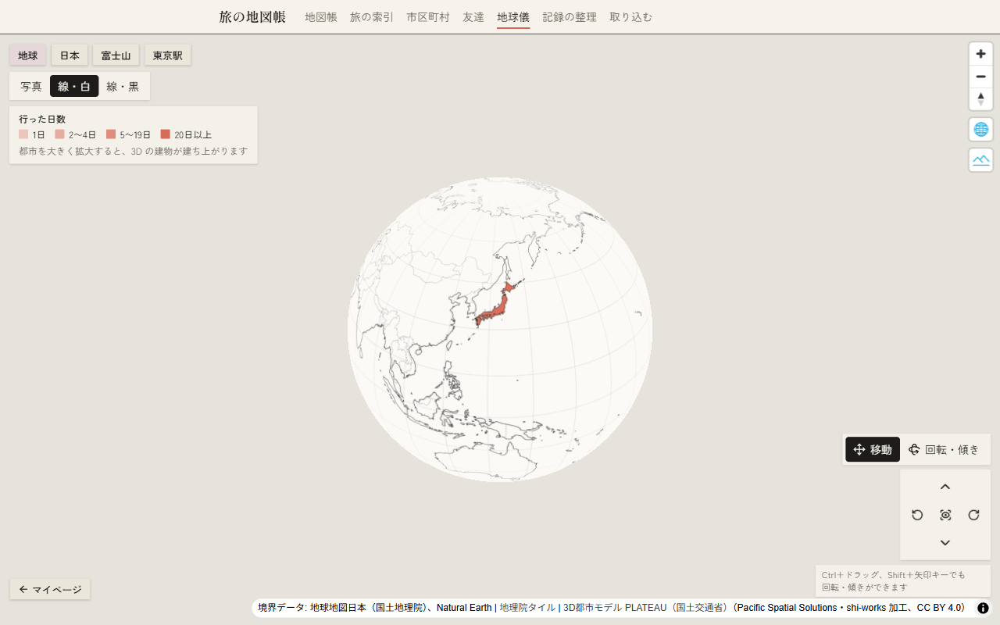
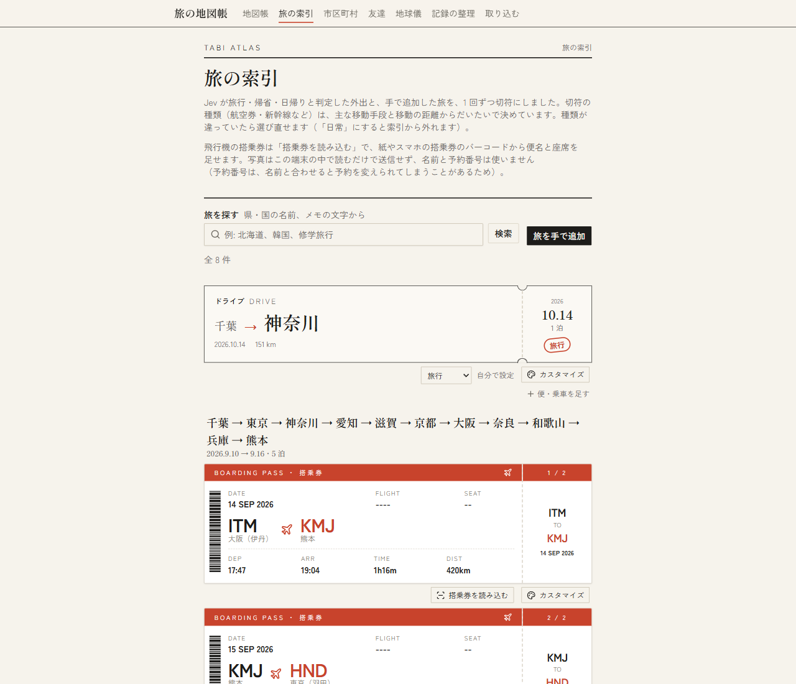
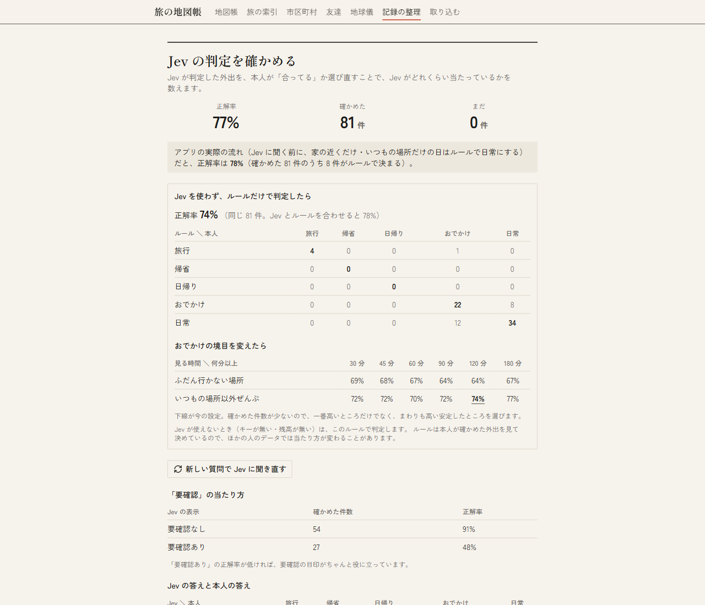
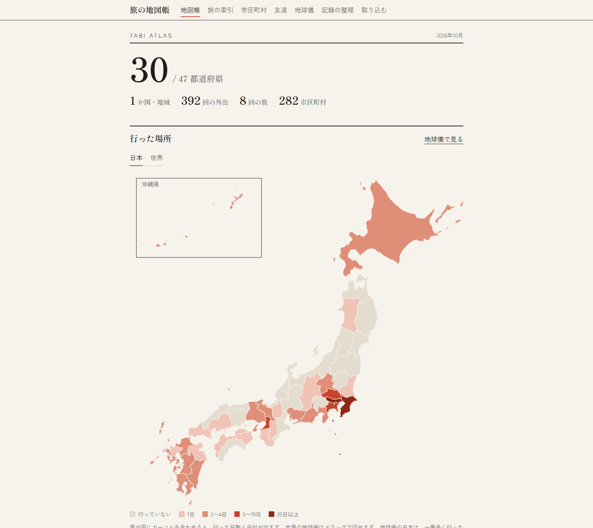
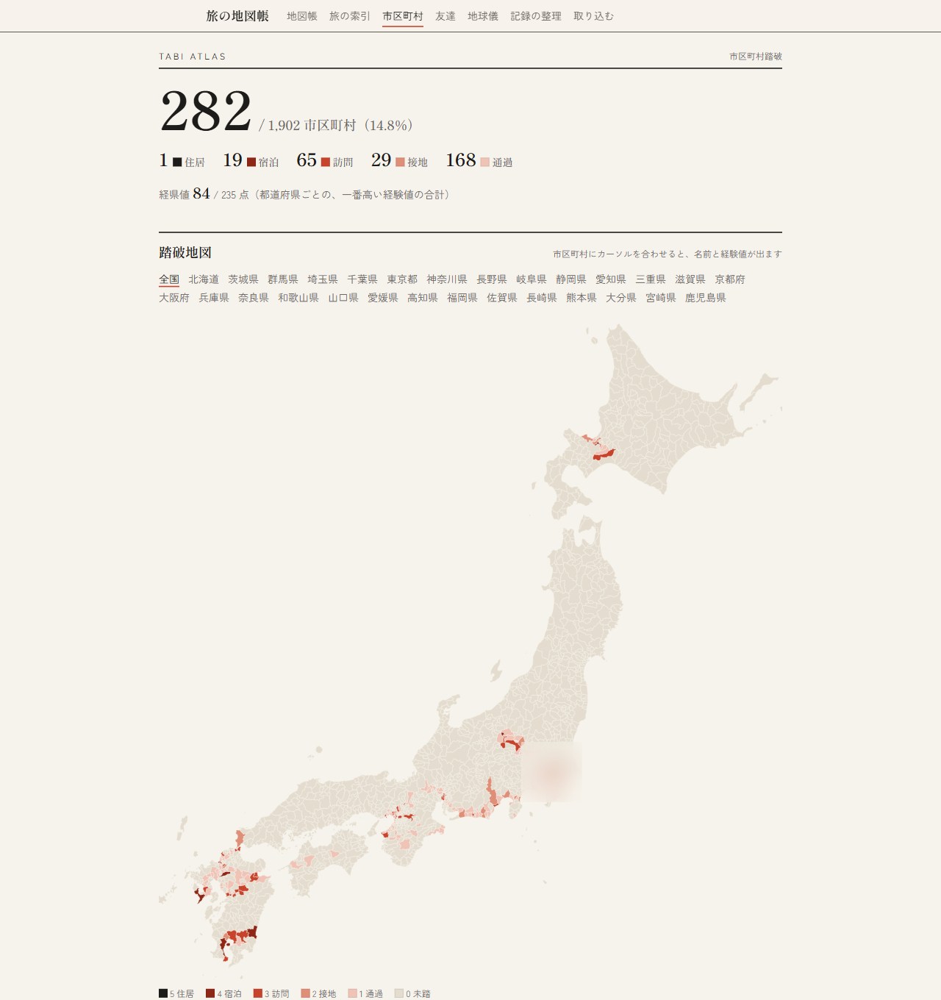
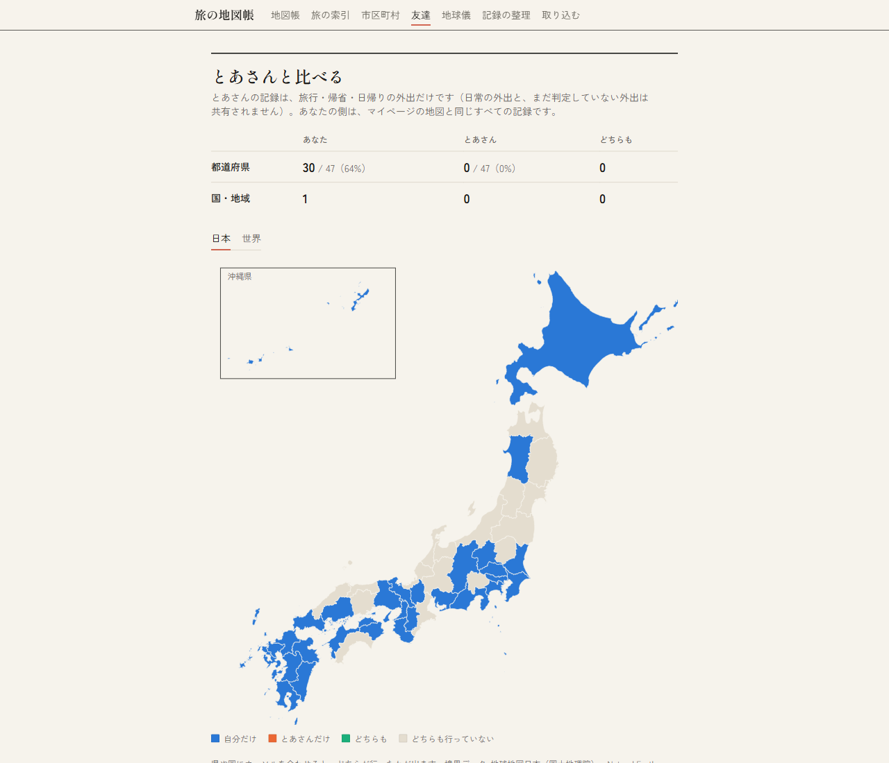
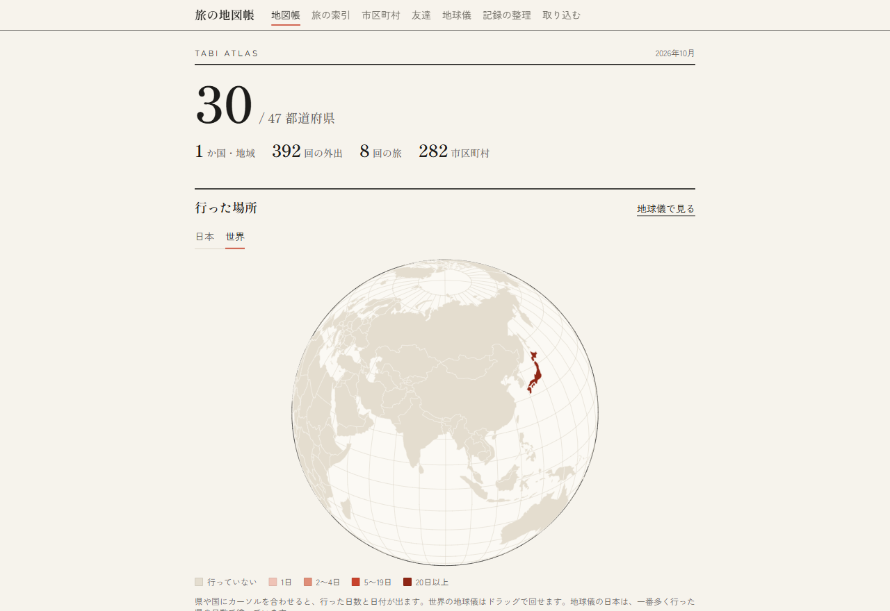
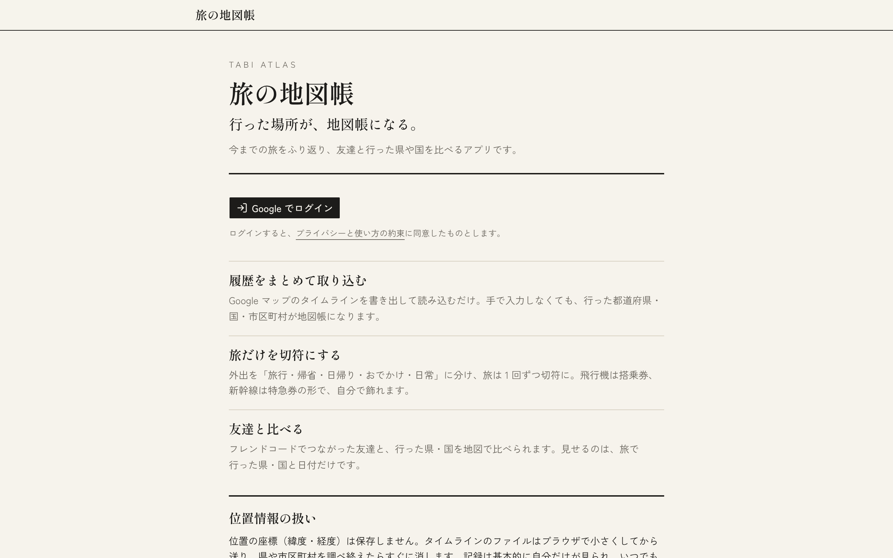

旅の地図帳
外出を「旅」と「日常」に、LLM でどこまで仕分けられるか。
Google マップのタイムラインから旅をふり返るアプリを作り、外出 1 回ずつを仕分ける部分に、LLM の判定器 Jev（TypeSafe AI）を使いました。このページは、作ったものの紹介よりも、正解率を上げるために何を試して、何が効いて、何が効かなかったかと、Jev がほかに何に使えそうかをまとめたものです。

先に結論
- 正解率だけ見ると、Jev とコードのルールはほぼ互角でした。どちらも「自分の答えのぶれ」（81%）に近いところまで来ています。
- Jev が一番役に立ったのは、迷っている外出に「要確認」を付けられることでした。要確認なしは 91% 当たり、ありは 48%。要確認の 3 分の 1 だけ見直せば、外れの 7 割を拾えます。
- 一番の失敗は、あいまいな境目に、自分が言っていない数字の線を引いたことです。それだけで 75% から 58% に落ちました。
やりたかったこと
タイムラインを取り込むと、外出が数百回分たまります。その 1 回ずつを、旅行・帰省・日帰り・おでかけ・日常の 5 つに分け、日常以外だけを旅の一覧や地図、友達との比較に出したい、というのが出発点です。
難しいのは、距離や泊数だけでは決まらないことです。同じ東京でも「学校に行った日」と「遊びに行った日」があり、同じ 2 時間の外出でも「病院」と「買い物」では意味が違います。この「旅か日常か」の判断を、LLM に任せられないかを試しました。

Jev の使い方の土台
Jev は、質問に対して選択や「はい／いいえ」を、確率つきで返す判定器です。最初に、次の 2 つを決めました。
計算はコード、判断だけ Jev
Jev は計算が苦手なので、泊数・距離・「その場所に何日行ったか」・「どこに何分いたか」は、コードで数えてから日本語の JSON で渡します。座標そのものは保存も送信もしません。
「いつもの場所」を数字にする
都道府県だけだと「東京の学校」と「東京で遊んだ日」が区別できないので、履歴全体から、10 日以上行った場所を「いつもの場所」、4〜9 日を「ときどき行く場所」、3 日以下を「ふだん行かない場所」として、それぞれに何分いたかを材料にしました。ふだん行かない場所にほとんどいない日は、Jev に聞かずにコードで「日常」と決めます（通学の日がほとんどなので、聞く回数が大きく減ります）。
正解率を上げる試行錯誤
自分の外出に自分で正解を付け、Jev とルールの答えと比べながら、1 つずつ変えていきました。
1. 4 択をやめて「はい／いいえ」3 問に
最初は「旅行・帰省・日帰り・日常」を 1 度に選ばせていましたが、並び順で答えが偏ることがありました。「これは日常か？」のように 1 つずつ聞く形に変えると、確率が実際とよく合うようになりました。泊まったかどうかは、聞かずにコードで分けます。
日常か？（Jev）── はい → 日常 │いいえ 泊まったか？（コード）── いいえ → 遠くへの日帰りか？（Jev）── はい → 日帰り ／ いいえ → おでかけ │はい 帰省か？（Jev）── はい → 帰省 ／ いいえ → 旅行
2. 質問の書き方を変えて、同じ 57 件で比べる
| 版 | 変えたこと | 正解率 |
|---|---|---|
| v1 | 最初の「はい／いいえ」版 | 75% |
| v2 | 「いつもの場所以外に合計 1 時間以上いたら日常ではない」と数字の線を書いた | 58% |
| v3 | v2 をやめ、v1 に「自宅の近くの用事は日常」だけ足した | 77% |
v2 で大きく下がったのが、この試行錯誤で一番の発見でした。Jev は書かれた基準を文字どおり守るので、乗り換えの駅や友達の家を足すと「1 時間」はすぐ超え、ふつうの日まで「日常ではない」になりました。しかも、確率まで崩れました（「日常の確率 0〜20%」と自信を持って言った外出の 36% が、実際は日常）。その「1 時間」は自分の言葉ではなく、自分の話を勝手に数字に置き換えたものでした。
教訓：あいまいな境目に、本人が言っていない数字の線を引かない。基準は本人の言葉のまま渡す。基準を変えたら、必ず前後で比べる。
3. 質問を作るときに見ていない外出でも確かめる
確かめた外出を 81 件に増やすと、正解率は 80%（コードのルールも含めると 81%）。新しく足した 24 件だけなら 88% で、作るときに見ていない外出でも当たりました。
4. 保存した確率で「日常」の境目を調整する
Jev に聞き直さず、保存した確率から境目だけを動かして計算しました。
| 「日常」とみなす確率 | 30% | 35% | 40% | 45% | 50% | 60% |
|---|---|---|---|---|---|---|
| 正解率 | 79% | 80% | 84% | 84% | 81% | 74% |
40% と 45% が同じで安定していたので、45% にしました。これで Jev 込み 84%。
5. Jev を使わないルールだけでも作ってみる
アプリを公開すると、Jev を使えない人（ほかのユーザー）はルールで判定することになるので、同じ材料でルールだけの判定も作りました。「いつもの場所以外に 120 分以上いたらおでかけ」などの境目を選ぶと、ルールだけで 83%。Jev 込みの 84% と、ほぼ互角でした。
6. 正解を付け直したら、数字が下がった
自分の答えにまちがいが無いか気になり、1 回目の答えを見ずに、同じ 81 件を付け直しました。すると 81 件中 15 件（19%）で、自分の答えが変わりました。ほとんどが「おでかけ ↔ 日常」の境目で、迷った日は「その日の目的が用事ならば日常、遊びならおでかけ」と、基準を言葉にして決め直しました。
| 判定のしかた | 1 回目の答えで | 2 回目の答えで | Jev に聞く外出 |
|---|---|---|---|
| ルールだけ | 83% | 74% | 0 件 |
| Jev だけ | 80% | 77% | 81 件 |
| アプリの流れ（家の近くだけの日はコードで日常、ほかは Jev） | 84% | 78% | 73 件 |
| ふだんはルール、おでかけと日常の境目だけ Jev | 84% | 78% | 38 件 |
| Jev が迷っていない（要確認なし）ときだけ Jev、ほかはルール | 84% | 80% | 81 件 |
一番下がったのはルール（83% → 74%）でした。ルールの境目は 1 回目の答えに合わせて選んでいたので、答えが変わった分だけ外れました。Jev は本人の基準を言葉で渡しているだけで、数字を答えに合わせていないので、下がり方が小さく済みました。
7. 交差検証で、甘かった数字を直す
境目を選んだのと同じデータで測ると、そのデータにたまたま合う境目を選んでいる分、数字が良く出ます。「4/5 で境目を選び、残り 1/5 で測る」を 50 回くり返すと、2 回目の答えでのルールの正解率は平均 75%（69〜77%）。最初に言っていた 83% は、甘い数字でした。
8. どこで外れるのかを見る
| 外れ方 | 例 |
|---|---|
| 泊まりのおでかけ | ネカフェで夜通し遊ぶ、友達の家に泊まる。今のしくみでは泊まると「帰省か旅行」にしかならず、ルールも Jev も当てられない（7 件。ここで上限が 91% になる） |
| 用事か遊びか | 通院や書類を取りに行く日も、いつもと違う場所に長くいるので「おでかけ」に見える |
| 家の近くの寄り道 | 近所の新しいお店に少し寄っただけの日を、Jev は自信を持って「おでかけ」と言う |
| 何度も行く場所 | 何度も行く街は「ときどき行く場所」になり、ルールと Jev が同じ数字を反対に読む |
| 記録の区切り | 一度帰ったのに、記録の上で 2 つの外出が 1 つにつながっていた |
真ん中の 3 つは、「その場所が何か（病院か、お店か、友達の家か）」が分かれば見分けやすくなります。ただ、プライバシーのために場所の名前や種類は Jev に渡していません。正解率と個人情報の釣り合いのところで止まっています。
試行錯誤でわかったこと
- 数えられることはコードが強い。距離・泊数・滞在時間はコードで計算して渡すほうが、速く、確実で、無料。
- 基準は言葉で。勝手に数字の線を引かない。LLM は書かれた線を文字どおり守り、ずれた基準のまま自信を持って間違える。
- 正解そのものもぶれる。自分の答えでも 2 回で 19% 変わる。正解率は、人どうしの一致と並べて読む。迷う境目では、しくみを賢くするより、自分の基準を言葉にして答えをそろえるほうが効く。
- 境目を決めたデータと、測るデータを分ける。同じデータで決めて測ると、数字は良く見える。
それでも Jev に価値があるところ
正解率だけなら、ルールと互角です。それでも、ルールにはできないことが 2 つありました。
「迷っている」と言える
| Jev の表示 | 件数 | 正解率 |
|---|---|---|
| 要確認なし | 54 件 | 91% |
| 要確認あり | 27 件 | 48% |
要確認の 27 件だけを見直せば、Jev の外れ 19 件のうち 14 件を拾えます。全部を見直すより 3 分の 1 の手間で、外れの 7 割です。自分が付け直しで迷った日（ネカフェの泊まり、成人式と同窓会など）にも、ほとんど要確認が付いていました。ルールは「白か黒」しか出せません。
確率がおおむね現実と合う
| Jev が言った「日常」の確率 | 件数 | 実際に日常だった割合 |
|---|---|---|
| 0〜20% | 17 件 | 0% |
| 20〜40% | 17 件 | 24% |
| 40〜60% | 12 件 | 42% |
| 60〜80% | 19 件 | 89% |
| 80〜100% | 16 件 | 100% |
高い確率は実際より少し控えめですが、数字を「どれくらい信じてよいか」の目安として使えます。ただし、迷いの印は迷っている外れしか拾えません。家の近くの寄り道を自信満々で外した例も 2 件ありました。

Jev がほかに使えそうなこと
ここからは、今回の結果から考えたアイデアです。まだ試していない推測なので、上の結果とは分けて読んでください。
使い方の型：ルール＋境目だけ LLM
ふだんはコードのルールで速く決め、ルールが迷う境目だけ Jev に聞く。今回の保存した答えで計算すると、正解率は Jev だけと同じくらい（78%）のまま、Jev に聞く回数は半分以下（38 件）でした。正解率を上げる手ではなく、料金と待ち時間を減らす手として使えそうです。
使い方の型：見直す相手を選ぶ係
判定そのものを任せるのではなく、「人が確かめるべきもの」を選ぶのに、Jev の迷い（要確認）を使う。今回なら 3 分の 1 の手間で外れの 7 割です。人の確認が必要な仕事ほど、効き目が大きいと思います。
向いていそうな仕分け
「白黒つけにくく、間違いを人が確かめたい」仕分けに、「はい／いいえ＋確率」が向いていると思います。
| 場面 | Jev に聞くこと（はい／いいえ） | コードで先に数えること | 迷ったときは |
|---|---|---|---|
| 授業のレビュー | 具体的な中身があるか／先生への悪口になっていないか | 文字数、同じ人の投稿数 | 運営が確かめてから載せる |
| 学生のイベント・お知らせ | この人に関係あるか（興味・学年から） | 授業と時間がかぶるか | 一覧には出すが、通知はしない |
| 質問の掲示板 | 住まい・ビザ・授業などのどの話か | 似た過去の質問の数 | 全体に出す |
| 問い合わせ | 急ぎか | 受け付けからの時間 | 担当者が先に見る |
| メール | 返信が必要か | 相手とのやりとりの回数 | あとで見るに入れる |
| 写真 | 人に見せてよいか（顔・住所が写っていないか） | 撮った場所が自宅の近くか | 本人に確かめる |
ゲームの CPU・練習相手
ゲームの bot も、同じ組み立てでかなり強くなりそうだと思いました。ただし、速さを出すのは LLM ではありません。LLM は 1 回答えるのに時間がかかるので、人の反応（0.2 秒くらい）より遅くなりがちです。画面の読み取りと操作はコードで速く、Jev には数秒に 1 回の「今は攻めるべきか？」「この相手は危ないか？」のような判断だけを聞く、という分け方なら、反応が速くて判断もうまい相手が作れるかもしれません。確率が低いときは無理をしない、という使い方もできます。
オンライン対戦で人の代わりに bot を動かすのは、ほとんどのゲームで規約違反（チート）になります。使うなら、ひとりで遊ぶゲームの CPU や練習相手、ゲームを作る側のテスト用の bot のような場面です。
人によって「正解」が違う仕事
今回、自分の答えでさえ 2 回で 19% 変わりました。人によって基準が違う仕分けでは、本人の基準を言葉で持たせ、本人が直したら次から反映するしくみが向いていそうです。数字の線で合わせると、答えが変わったときに一気に外れます（ルールが 83% から 74% に落ちたように）。
使うときのチェックリスト
- 数えられることは、コードで数えてから渡す
- 基準は言葉で書く。自分が言っていない数字の線を引かない
- 選択肢を並べるより、「これは◯◯か？」と 1 つずつ聞く
- 確率は、答えそのものより「人が見直す目印」に使う
- 正解を 2 回付けて、人どうしの一致も測る。それが正解率の天井の目安になる
- 基準を決めたデータと、測るデータを分ける
これから
- 泊まりでも「遠くへ出かけたか？」を聞き、近場なら「おでかけ」にできるようにする（上限の 91% を外す）
- 友達に、自分のアカウントで「判定を確かめる」をやってもらい、自分以外のデータで正解率を測る（データはもらわず、正解率の画面だけ）
- 帰省・日帰りの外出も確かめる（今回のデータには 1 件も無かった）
アプリの画面
タイムラインを読み込むだけで、行った都道府県・国・市区町村が地図にまとまり、旅は 1 回ずつ切符になり、フレンドコードでつながった友達と行った県を比べられます。位置の座標は保存せず、データベースの全部の表に行単位のアクセス制御（RLS）をかけています。





使った技術
| 画面 | Next.js 16（App Router・Server Actions）、React 19、TypeScript、Tailwind CSS 4、shadcn/ui |
|---|---|
| データ・ログイン | Supabase（PostgreSQL・Auth・RLS）、Google ログイン |
| 地図 | TopoJSON の境界データ（SVG）、MapLibre GL JS（3D の地球儀） |
| 判定 | Jev（TypeSafe AI）＋ コードのルール |
| 品質 | Biome、Playwright（画面のテストと計算のテスト） |
| 公開 | Vercel（アプリ）、GitHub Pages（このページ） |
くわしい検証の記録は、リポジトリの docs/research/jev-report.md にあります。
データの出典
- 都道府県の境界：地球地図日本（国土地理院）を dataofjapan/land が TopoJSON に変換したもの
- 国の境界：Natural Earth（world-atlas）
- 市区町村の境界：国土数値情報（行政区域データ、国土交通省）2021 年版を、スマートニュース メディア研究所 japan-topography が加工したもの
- 空港の一覧：OurAirports（パブリックドメイン）
- 3D の地球儀の航空写真・標高：地理院タイル（国土地理院）
- 3D の地球儀の建物：3D都市モデル（Project PLATEAU、国土交通省）。Pacific Spatial Solutions 作成の LOD0 データ（CC BY 4.0）を shiwaku/mlit-plateau-bldg-pmtiles が PMTiles に変換したもの